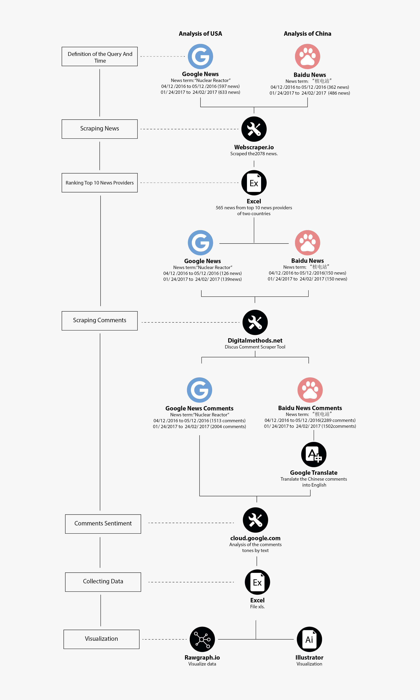

Description
Emotion analysis of comment aims to find the emotion and attitude of China and US readers in 5 categories of articles in the different period and to know readers’ comments mainly distributed in which category of articles. The aim was to make a comparison of emotion and attitude between Chinese readers and american readers in particular time and different category article.
The area of the rhombus represents the number of comments, Y-axis represents the number of news with comments, X-axis represents the classification of the article, gray represents the neutral attitude, blue represents the positive attitude, orange represents negative attitude.
In general comments of China and US readers are mainly neutral about the nuclear reactor. Comments of China and US readers centrally distribute in environment category articles, negative comments are slightly more than positive. It is interesting that in political article type, comments of US readers are relatively concentrated, mainly including negative and neutral attitude, instead, in February 2017 the Chinese political news articles had no data about comment since there was no comment about political news. In health category articles, numbers of comments in China and US are similar, but those of US is more negative.
Protocol
We used Discus Comment Scraper Tool to scrape 7308 comments from the news articles in total. Chinese comments were translated into English text first, with the category as the unit, we used Cloud. Google to analyze the emotion of every piece of comment to obtain numbers of sentences with negative, positive, neutral attitude. Collected them into the excel to calculate the numeral proportion of comments with counting sentence's sentiment and then visualize it.
Data
Data source: Google News , Baidu News
Cloud.google
Download data(All comments), Download data (Sentiment)
The Chinese data that we collected may have language issues because sometimes Chinese use positive satiric comments to describe negative feeling. Since we used Google Translate to change the language of the comments, some of these satiric comments could be calculated as positive.